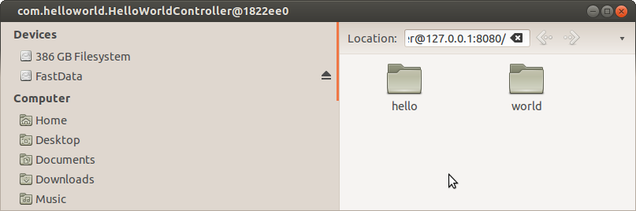
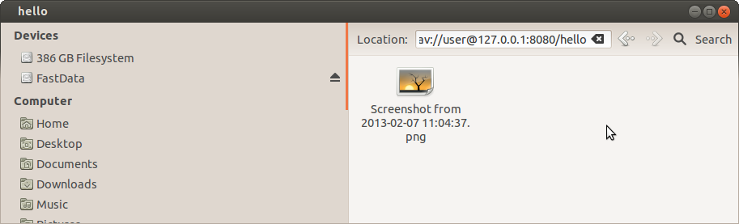

So here's what i got when i ran it:

As promised our hello and world resources now look like folders. You can open them with your webdav browser and (of course) there's nothing inside.
But you can't upload files yet! Why not? Because we havent annotated a method which allows uploads. So lets do that now
The annotation we're interested in here is @PutChild. We're going to put a child into a product, which we can do like this:
@PutChild
public ProductFile upload(Product product, String newName, byte[] bytes) {
ProductFile pf = new ProductFile(newName, bytes);
product.getProductFiles().add(pf);
return pf;
}
Note that we've asked for a byte[], so we got a byte array. But we could also have asked for an InputStream which would of course be better for larger files to allow streaming data transfer. Its very important to return a reference to the created object so milton can give the correct response to the client.
So lets stop the server, run it with the new code, and upload a file to the "hello" folder. It worked! Here's what i got:
